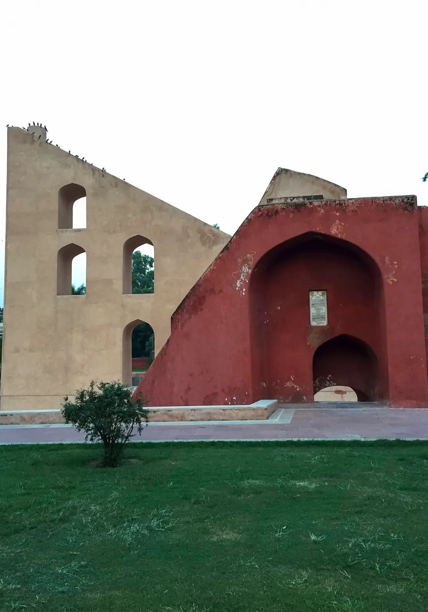

9 stories, each with its photo, the official position and its sources.

File photo · 2017 · The Jantar Mantar observatory in New Delhi; journalists' complaints include coverage of protests near it on 3 October. Photo from 2017. Photo: Bibek Raj Pandeya / Wikimedia Commons, CC BY-SA 4.0 (cropped)
AssemblyNew Delhi
Delhi Police: reel makers not covered as journalists
Answering four press groups' Supreme Court petitions over protest coverage, Delhi Police said its protections for journalists don't cover reel makers or influencers. Police deny stopping reporters or seizing equipment.
Keralam's home minister told the Assembly 15,627 posts or links were taken down on police requests in the new government's first six months, with 3,472 cases filed. He said they were fabricated or manipulated.
The Allahabad High Court bailed former UP minister Azam Khan until 10 Dec, saying the ED arrested him at a jail gate without written grounds. The ED says it followed procedure.
File photo · 2005 · Makeshift shelters at Intifada transit camp near Nyala, South Darfur, in 2005. File photo. Photo: USAID / Wikimedia Commons, Public domain (cropped)
Lives lostSudan (Kordofan and Darfur worst hit)
UN: at least 2,230 civilians killed this year
The UN rights office verified at least 2,230 civilian deaths in Sudan from January to October, over 1,630 by drone strikes, mostly in Kordofan. No army or RSF response was reported.
File photo · 2025 · The public services centre in Komyshuvakha, Zaporizhzhia region, in 2025; the UN report cites the 2 Nov bombing of a school in the village. File photo. Photo: Вадим Балачук / Wikimedia Commons, CC0 (resized)
Lives lostUkraine
UN: 2026 deadliest year for Ukraine's civilians
UN monitors say 372 civilians were killed in Ukraine in October, and more died in 2026's first ten months than in all of 2025. Russia says Ukrainian strikes killed civilians in occupied areas.
The UN rights office says 514 people were killed in security operations against gangs in July–September, and 4,595 by armed violence this year. No Haitian government response was reported.
File photo · 2017 · Liwasang Bonifacio plaza in Manila, with an ASEAN banner, in 2017. File photo of the protest site. Photo: Judgefloro / Wikimedia Commons, CC0 1.0 (resized)
AssemblyMuntinlupa and Manila, Philippines
Over 245 held at Manila summit protests
Police detained at least 245 people protesting during the ASEAN summit and Trump's visit, held three days without charge, HRW says. Police said the street protests were unauthorised.
Gaza ceasefire near collapse, Board of Peace warns
The US-backed Board of Peace told the UN Security Council the truce may collapse, saying Israel blocks winter supplies and Gaza's interim administration and both sides miss commitments. No Israeli or Hamas response was reported.
File photo · 2026 · The Monument to the Republic at Place de la République, Paris, a usual rally point, in 2026. File photo. Photo: Romainbehar / Wikimedia Commons, CC0 (cropped)
AssemblyParis and cities across France
Public workers march across France over pay
Public-sector workers, pupils and students marched across France on 17 Nov; the interior ministry counted 146,000, the CGT union just over 500,000. The government says debt leaves little room for raises.


.jpg){kind=link}